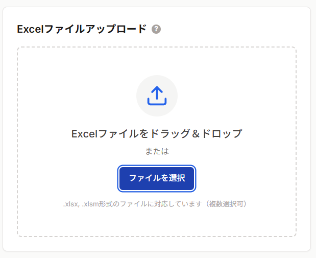
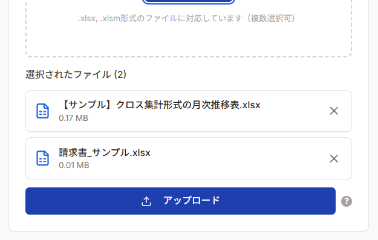

📤 Excelファイルのアップロード
ExcelファイルをxFormlyにアップロードして、CSV変換の準備を行います。
📂 アップロード方法
メイン画面左側の「Excelファイルアップロード」エリアで、以下のいずれかの方法でファイルを選択します。

- ドラッグ&ドロップ: Excelファイルをアップロードエリアにドラッグ&ドロップ
- ファイル選択: 「ファイルを選択」ボタンをクリックして、エクスプローラーからファイルを選択
次のステップ
ファイルを選択したら、「アップロード」ボタンをクリックして処理を開始します。

📋 アップロード仕様
| 項目 | 制限 |
|---|
| 対応形式 | .xlsx (Excel 2007以降)、.xlsm (マクロ有効ブック) |
| 非対応形式 | .xls (Excel 2003以前)、その他のファイル形式 |
| 複数ファイル | 同時選択可能 |
| ファイルサイズ | ブラウザの制限に準拠 |
💡 ヒント: .xls形式のファイルは、一度Excelで開いて.xlsx形式で保存し直してからアップロードしてください。
⚠️ 注意: アップロードされたファイルは、CSVダウンロード後にサーバー上から完全に削除されます。セキュリティ上、データは一時的にのみ保持されます。
⚠️ トラブルシューティング
❌ 「アップロード対応ファイルは「.xlsx」「.xlsm」のみです。」と表示される
原因: 非対応のファイル形式（.xls等）を選択しています。
解決方法:
- Excelで対象ファイルを開く
- 「ファイル」→「名前を付けて保存」
- ファイル形式を「.xlsx」に変更して保存
- 再度アップロード
❌ ファイルをドラッグしても反応しない
原因: ブラウザの設定やセキュリティソフトが影響している可能性があります。
解決方法:
- 方法2の「ファイルを選択」ボタンを使用
- ブラウザを再読み込み（F5キー）
- 別のブラウザで試す
💡 アップロードしたファイルはいつまで保存されますか？
回答: アップロードされたファイルは以下のタイミングで自動削除されます：
- CSVダウンロード完了後
- セッションタイムアウト時（1時間）
- 「やり直し」ボタン押下時
個人情報保護のため、一時的にのみ保持される設計です。
最終更新日: 2026年1月22日